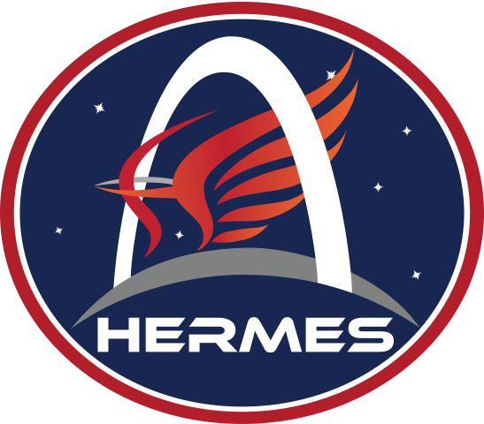
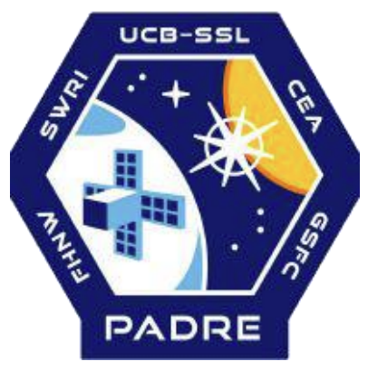
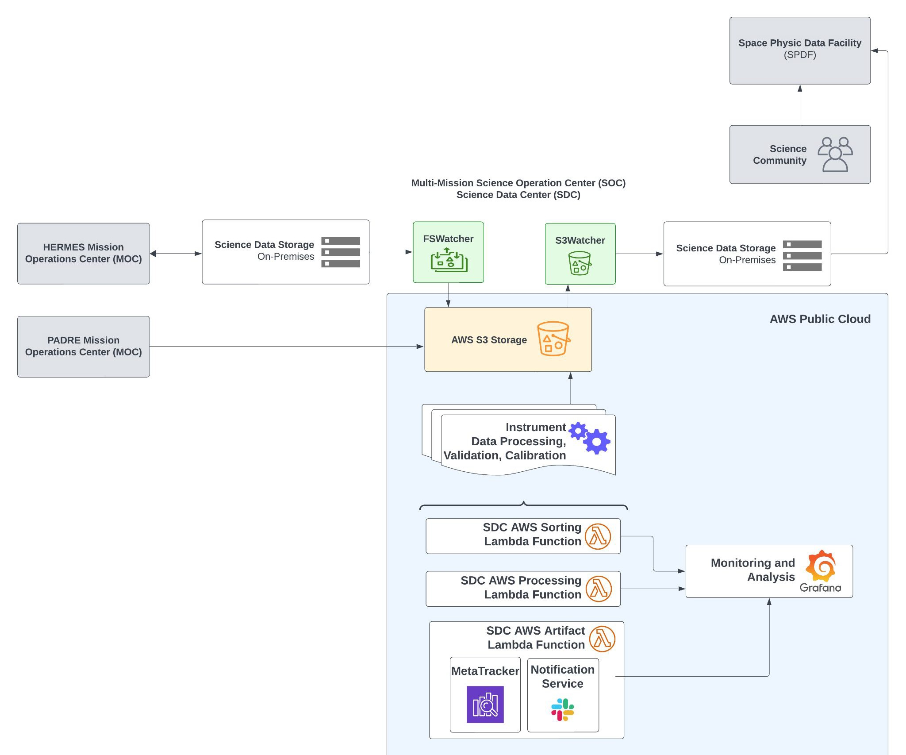
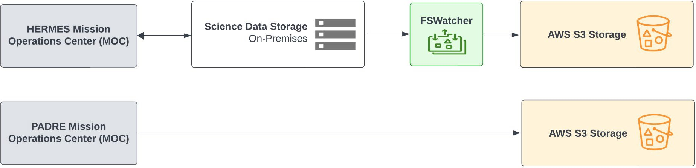
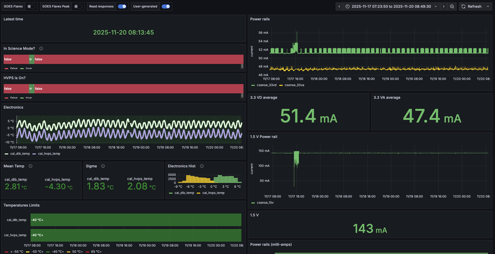
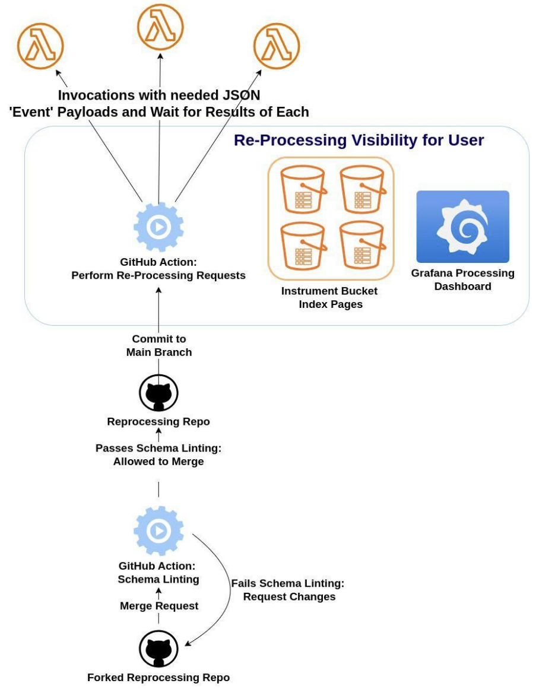

Enhancing SWxSOC through Open Collaboration
For Multi-Mission Data Processing and Expedited Release


Who We Are at SWxSOC
Development of an Open Source multi-mission Science Operations Center supporting space weather missions in alignment with NASA's Open Science initiative (OSSI).
Services we provide:
- Analysis — Cloud-based data analysis environment
- Alerting — Instrument anomaly alerts and performance tracking
- Science Alertings — Notifications of space weather events
- Data Backup — Primary and low-cost backup data center
- Data Processing — Pipeline for science file calibration
- Monitoring — Graphical interfaces for pipeline and telemetry
- Telemetry Forwarding — Capture and distribute to downstream systems
Supported Missions
- HERMES — Heliophysics Environmental and Radiation Measurement Experiment Suite, 4 in-situ instruments on the Lunar Gateway.
- PADRE — solar PolArization and Directivity X-ray Experiment, two solar-observing x-ray instruments (launched June 2025).
- REACH - Responsive Environmental Assessment Commercially Hosted (REACH), constellation of 32 dosimeter payloads hosted on a commercial LEO satellite constellation.
- IMPAX - Imaging Microburst Precipitation with Atmospheric X-ray emissions (IMPAX) (H-FORT) to launch in 2027.
A High-Level Overview of Our Evolving Open Source Data Processing Pipeline
- Multi-mission cloud-based architecture enables easy scaling.
- Infrastructure as Code — all cloud-resource configurations available on GitHub.
- Hybrid Cloud — Supports both on-premises and cloud environments for flexibility and redundancy.
- Event-Driven Architecture — Utilizes AWS EventBridge and Lambda functions for efficient task execution.
- Modern design — Emphasizes scalability, maintainability, and ease of integration.

Managing Data Across On-Premises and Cloud
- Can support receipt of data from any source including on-premises and cloud-based systems.
- All data is mirrored between on-premises and cloud environments.
- Cloud environments act as high-availability backups for on-prem data.
- On-prem servers are linked to NASA archives for long-term storage.

Running Auxiliary Tasks via the Executor Lambda Function
- Runs auxiliary but regular tasks outside of the main processing pipeline.
- Uses AWS EventBridge to schedule individual tasks.
Current SWxSOC Executor Activities:
- Fetching ancillary data products (e.g. GOES XRS from NOAA APIs)
- Creating Grafana annotations
- Generating code count across organizations
Monitoring with Grafana: Mission Insights and Pipeline Overview
Grafana, an open-source tool, enables the integration of multiple data sources to create insightful dashboards. Each mission is provided with its own dedicated Grafana server, allowing team members to log in with their GitHub account if they belong to the mission’s GitHub Organization.
Dashboards:
- Housekeeping Dashboard — at-a-glance view of housekeeping data from science products.
- MetaTracker Dashboard — metadata for all science products in the pipeline.
- Processing Pipeline Dashboard — Lambda function logs and pipeline activity.

Codebase Management and CI/CD Workflows
- Organized Repositories — codebase split across multiple GitHub repos including Python packages for AWS Lambda functions.
- Automated Rebuilds and Deployments — changes trigger automatic rebuilds via AWS CodeBuild CI/CD pipeline.
- GitHub Actions Integration — linting, testing, and documentation updates on pull requests.
- End-to-End Workflow Testing in Lambda Containers — changes tested directly within the Lambda container before deployment.
Enhancing Our Pipeline: Re-processing Capabilities
A streamlined process for reprocessing data sets at different data levels.
- Request Submission — submit a pull request using the provided schema to the main git repository, maintaining a full version history.
- Validation and Archiving — each request is validated and organized into the appropriate archive.
- Processing and Monitoring — valid requests from organization members are allowed to merge. Requestors monitor status through CI/CD or Grafana.

Space Weather Science Alerts
- In collaboration with the NASA Goddard Astrophysics Global Coordinate Network (GCN), SWxSOC can generate, subscribe to, and receive space weather science alerts.
- The Astrophysics Gamma-ray Coordinates Network (GCN), enabled seminal breakthroughs in astrophysics by coordinating worldwide follow-up observations that revealed the nature of gamma-ray bursts.
- Provides infrastructure to send streaming, real-time, machine-readable, and standardized alert messages
- Publisher-subscriber model, users choose which “topics” to subscribe to (e.g. gamma-ray bursts, gravity-waves)
- Missions can generate alerts based on their data, and subscribe to alerts from other missions or external sources, enabling timely notifications of space weather events.
Any Questions?
Feel free to contact us for more information!
Email: steven.christe@nasa.gov